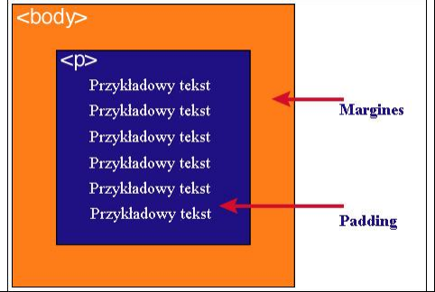

Model pudełkowy - Każdy element w dokumencie HTML, otacza się prostokątnym obszarem zwanym pudełkiem(ang. Box model).
| Zawartość | Opis |
|---|---|
| content | zawartość elementu (np.: tekst, obrazek) |
| padding | otaczające marginesy wewnętrzne, odstęp między obramowaniem i zawartością elementu |
| border | obramowania wokół zawartości elementu, ma styl i kolor. |
| margin | marginesy wokół ramki (margines zewnętrzny). Jest to pusty obszar wokół ramki, który nie ma koloru tła i jest przeźroczysty |

